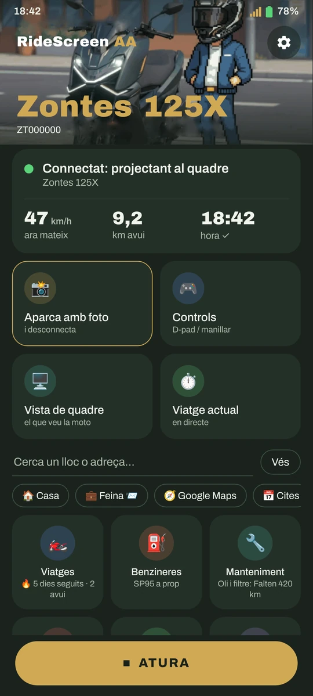
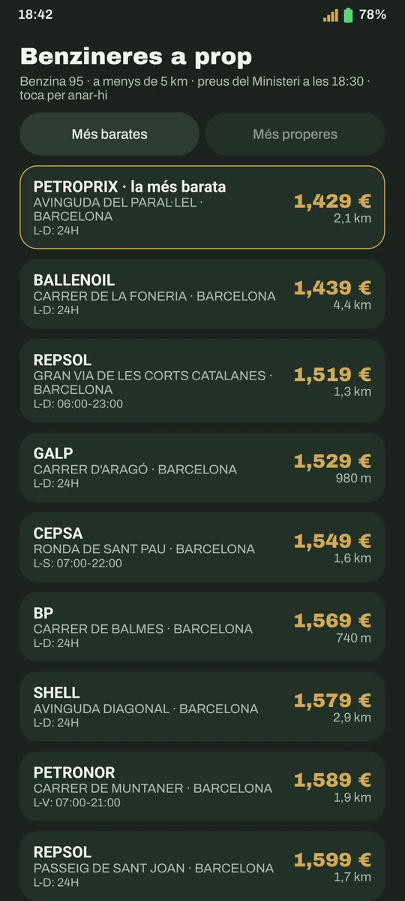
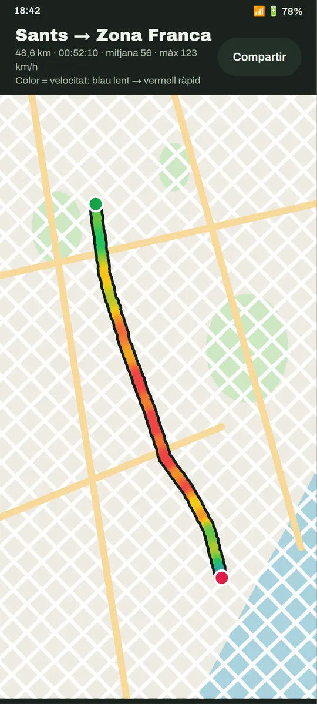
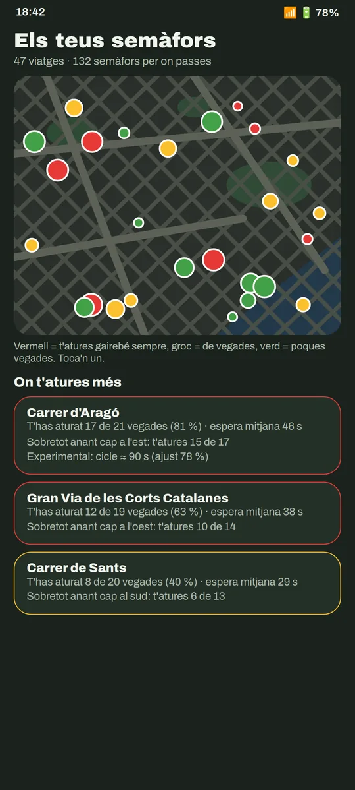
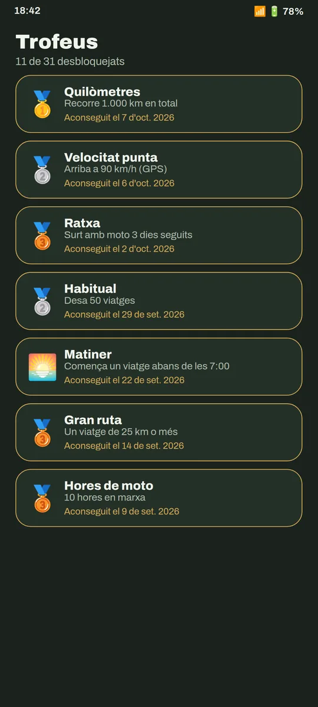
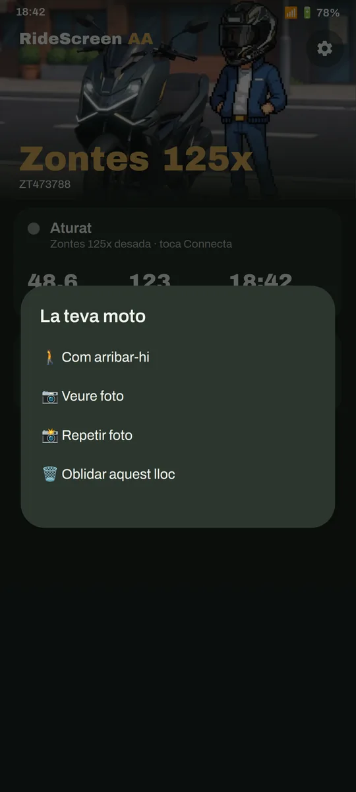
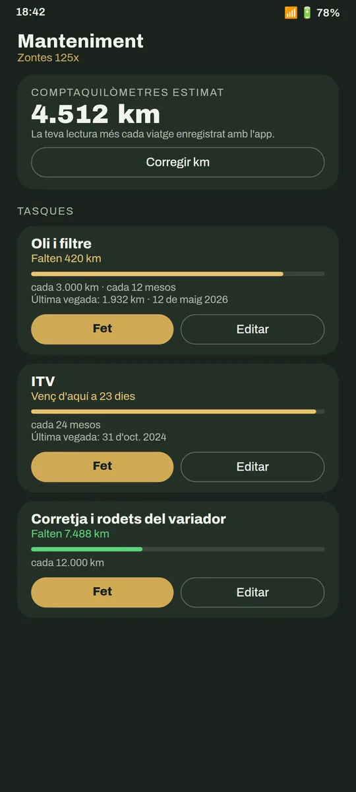
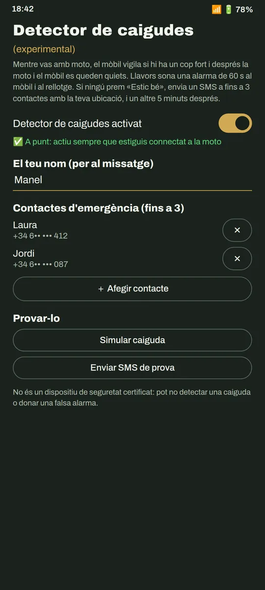
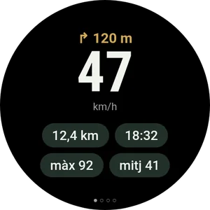
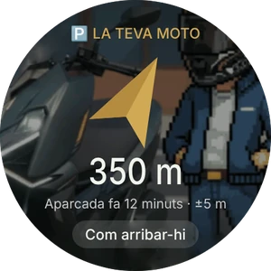

Android Auto al quadre de la teva moto, sense cables
Google Maps, Waze, Spotify i l'Assistent a la pantalla de la moto, connectant-se sol en engegar. I a més: les benzineres més barates, els teus viatges amb rècords, vídeos amb la velocitat a sobre i app per al rellotge.
Gratuïta · sense anuncis · de codi obert · Android 10 o superior
Descàrrega directa de l’última versió · també a GitHub · novetats de la v2.3


Funciona amb la meva moto?
Si el teu quadre mostra un codi QR per connectar el mòbil (MotoPlay / EasyConnect), gairebé segur que sí. L'app es prova cada dia en una Zontes 125X; parteix d'OpenCfMoto, que funciona amb moltes marques que fan servir el mateix quadre.


Molt més que Android Auto
Es connecta sola
Engegues la moto i Android Auto apareix al quadre, amb el mòbil a la butxaca.
Imatge a mida
Ajusta la imatge al quadre amb fletxes, veient el resultat en directe a la moto.
«Ok Google»
Parla amb l'Assistent des de l'intercomunicador, el rellotge o les ulleres.
Les benzineres més barates
Preu oficial de la gasolina 95 a prop teu, i Maps t'hi porta. Només a Espanya.
Els teus viatges
Cada sortida es desa sola: ruta per velocitat, mapa de calor, rècords i trofeus.
Vídeo del viatge
Ajunta els teus clips (Ray-Ban Meta, càmera, mòbil) amb mapa, velocitat i hora a sobre.
Els teus semàfors
On t'atures més, quant esperes i quin camí és de debò més ràpid.
On he aparcat
Desa el lloc i una foto; la brúixola del rellotge et porta fins a la moto.
Manteniment
Oli, corretja, ITV… amb avís quan toca, i el teu consum real.
Detector de caigudes
Alarma al mòbil i al rellotge i, si no respons, SMS amb la teva ubicació.
ExperimentalLa bateria de la teva moto
Voltatge i si està bloquejada, llegits de la caixa keyless. Només lectura: mai no envia ordres.
Nou a la 2.3Widget «Connecta»
Un toc a la pantalla d’inici i es connecta amb la moto, amb la foto del teu Garatge.
Nou a la 2.3Mode passatger
El teu acompanyant tria destinació i música i mou Android Auto des del seu mòbil.
Nou a la 2.3Viatges a salvo
El viatge es desa cada 30 s encara que l’app es tanqui. I pots importar rutes GPX.
Nou a la 2.3Així es veu








Ajust de la imatge, en directe al quadre


App per a rellotges Wear OS · guia del rellotge
A punt en 10 minuts
Descarrega l'APK
Amb el botó de dalt, directe (o des de GitHub). Les versions següents te les ofereix la mateixa app.
Prepara Android Auto
Un ajust d'una sola vegada a Android Auto. La guia t'ho ensenya amb captures.
Escaneja el QR del quadre
I prem Connectar. A partir d'aquí, es connecta sola en engegar la moto.
Preguntes freqüents
És una app oficial de Zontes?
No. És un projecte independent, fet per un motorista per a la seva Zontes i compartit amb la comunitat. No està afiliat amb Zontes, CFMoto, Carbit ni Google.
Quant costa?
Res. És gratuïta, sense anuncis ni subscripcions, i el codi és obert (llicència AGPL-3.0). Si t'és útil, em pots convidar a un cafè.
Per què no és a Google Play?
Està en camí. Mentrestant es descarrega des d'aquest web; si Play Protect avisa, és perquè encara no coneix l'app: Més detalls → Instal·la igualment.
Què passa amb les meves dades?
Els teus viatges, fotos i ajustos es queden al teu mòbil: no hi ha comptes ni núvol. L'app només envia informes anònims d'errors (sense res que t'identifiqui) per poder arreglar-los, i els pots desactivar.
Necessito dades mòbils?
Per als mapes, la música en streaming i les benzineres, sí, igual que amb Android Auto al cotxe. La connexió amb la moto és pel seu propi Wi‑Fi.
Alguna cosa no funciona, què faig?
Mira la guia, que té els errors més habituals. Si continua, a l'app: ❓ Ajuda → Compartir registres, i envia-ho explicant què ha passat.